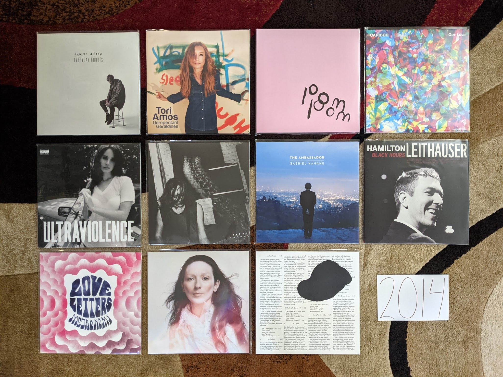

2014 Albums¶
This is it folks, the year “I got old.” I do feel like I made an attempt to explore the new releases, and keep in touch with what was being covered in the remaining indie music blogs. This is the last year I kept a Spotify playlist of the things that I streamed for posterity. Interestingly, I feel like this is also the year that indie music took a big hit in popularity and more mainstream styles returned to prominence. That said, this is still a pretty great set of records.
{kind=link}
Everyday Robots by Damon Albarn - A delightfully minimalist record that feels like a variation on his other project The Good, the Bad, and the Queen, this is what Albarn does best. “The Selfish Giant”” was probably my favorite song from this year. He doesn’t get enough credit for his inventive piano playing. [Memory: I remember being disappointed by most of the new music I was hearing this year and latching on to this record in a very strong way]
Unrepentant Geraldines by Tori Amos - This is where she entered into that career phase where every album is perceived as a comeback. That probably says more about the press and the general public not paying attention. Those in the know, understand that there has only been on sub-par Tori Amos album. That said, this is return to a smaller kind of songwriting, that was a clear effort to do something different. [Memory: The record scared me a little at release, as Tori felt like she was aging for the first time. It was as much about me as it was her. Then I realized that Tori was showing her age only for effect. Her voice was becoming weathered in a way that could be used for color. It was just another tool in the toolbox.]
pom pom by Arial Pink - It seems like everyone is converging on this being the best release for this guy. It certainly is the most extreme specimen, and that probably does make it the best. This is not subtle music. “Picture Me Gone” is such a beautiful song and a relevant critique of social media culture. [Memory: This album was a bit much for me when it first came out, it took years for me to warm up to it.]
Our Love by Caribou - Another solid, understated electronic record from Dan Snaith. I know this kind of music is still being made, but not nearly as well as it was done here. [Memory: Pitchforks glowing review of this actually made me not listen to it at first. That’s the way it was in those days.]
Ultraviolence by Lana Del Rey - I didn’t take Lizzy Grant very seriously until this record. I know that the production is what is pulling me in, but there is some serious songwriting here as well. This was shocking at the time, but it makes complete sense in retrospect with the sequence of fantastic records that would follow. “Brooklyn Baby” is such a great diss track aimed at the New York City hipster culture that rejected her. [Memory: Hearing the instrumental second bridge in the title song for the first time was startling. It was so beautiful and interesting.]
Keys by Hooray for Earth - This band had a very brief but highly productive run. Only 3 years after their debut EP they released their finest work here. The big guitars, the strong melodies, the delicate vocals, the judicious use of electronics, and the slick production that sounds increasingly like Toto. One of my favorite bands of the late indie era, and their breakup almost was a signal that time was over. [Memory: These guys always had a great promo video for the first single on a new record, and “Keys” really got my attention]
The Ambassador by Gabriel Kahane - A concept album about his former home of Los Angeles. This was the record where Kahane replaced Sufjan as my favorite maker of “fancy folk music.” He is almost going prog here on “Empire Liquor Mart.” The song “Villains” is great comic observation about how movies and other media distort our perceptions of reality. [Memory: When this got pressed on vinyl, I realized that the format was truly back]
Black Hours by Hamilton Leithouser - When The Walkmen one of my favorite bands of the indie era went on permanent hiatus I was bummed. I’m glad this guy kept making music that was very in line with the sound of his band, but with a mature sounds for his aging fans. This is a logical extension of the strings and horn sound of the late Walkmen records. [Memory: Hearing one of my favorite rock artists make this kind of music made me realize we were both getting older]
Love Letters by Metronomy - The Metronomy records can be organized into two groups: The understated half-instrumental soundscapes, and the quirky pop collections. This one is strongly in the latter class. “Reservoir” has become one of their trademark songs, but it is only one of many pop gems here. [Memory: I don’t know why, but I didn’t really “get” the band until this album, which is one of their less popular]
This is My Hand by My Brightest Diamond - A transition work between the chamber pop that came before and the dance worthy tracks that would be next. It is also the line between the woman who was Shara Worden but would become Shara Nova. [Memory: I saw Shara for the last time on this tour. It was a fantastic show in a small venue in Toronto]
In Conflict by Owen Pallet - [2014 FAVORITE] The record where he perfected the formula that was started with the Final Fantasy records. While the music is feeling more refined and perfected than ever before, the lyrics are a stunningly transparent account of someone who is really struggling. [Memory: I’ll never forget seeing the artist perform “The Riverbed” at the 2014 Polaris Prize Gala]
The Innocents by Weyes Blood - A much rawer, and sadder affair than the music that would make her famous, but in my opinion, still her best work. I love the records that have come since, but this is really special. This is the kind of music someone can only make before they know what they are fully doing. “Ashes” and “February Skies” are two of my favorite songs of all time. [Memory: It is rare for me at this point in life to find a new favorite artist of all time. When I discovered Weyes Blood and took a deep dive into her catalog in early 2023 I found an artist that I really connected with. This is by far my favorite of her work, and one of my favorite albums of all time.]